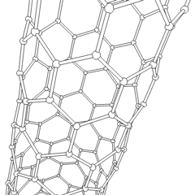

太空电梯的可行性关键在于缆绳材料。这条长达10万公里的缆绳需要承受自身重量、货物重量、以及环境应力，同时还要足够轻以减少总质量。材料科学家们计算出，缆绳材料的强度重量比（比强度）必须达到：
缆绳材料的极限挑战

碳纳米管电子显微镜图像
关键性能指标
抗拉强度
> 100 GPa
（钢铁的50-100倍）
密度
< 2 g/cm³
（越轻越好）
比强度
> 50 GPa/(g/cm³)
（决定性指标）
耐久性
50+ 年
（抗辐射、抗氧化）
材料对比分析
| 材料 | 抗拉强度(GPa) | 密度(g/cm³) | 比强度 | 可行性 |
|---|---|---|---|---|
| 钢铁 | 0.4 - 2.0 | 7.8 | 0.05 - 0.26 | ❌ 远不达标 |
| 凯夫拉纤维 | 3.6 | 1.44 | 2.5 | ❌ 不足 |
| 碳纤维 | 3 - 7 | 1.75 | 1.7 - 4.0 | ❌ 不足 |
| 碳纳米管（理论） | 100 - 150 | 1.3 | 77 - 115 | [✓] 理论达标 |
| 碳纳米管（实际） | 10 - 60 | 1.3 | 8 - 46 | ⚠️ 接近达标 |
| 石墨烯 | 130 | 2.2 | 59 | [✓] 有潜力 |
| 硼氮纳米管 | 33 - 100 | 1.4 | 24 - 71 | ⚠️ 研究中 |
钢缆 vs 碳纳米管：拉力对比
10.0 mm
10.0 t
说明：仅做“抗拉强度 × 截面积”的简化估算，忽略缆绳自重、疲劳、缺陷、动态载荷等工程因素；结果用于直观对比。
钢缆（典型强度）
—
—
碳纳米管纤维（较乐观实际）
—
—
碳纳米管：最有希望的材料
什么是碳纳米管？
碳纳米管（Carbon Nanotube, CNT）是由石墨烯片卷曲而成的圆柱形纳米材料，直径仅为1-100纳米（人类头发直径的万分之一），但长度可达数厘米甚至更长。它由日本科学家饭岛澄男于1991年发现。

碳纳米管分子结构示意图
碳纳米管的类型
单壁碳纳米管(SWCNT)
⭕ 单层
- 直径：0.4-3纳米
- 强度：最高
- 制造难度：高
- 成本：昂贵
多壁碳纳米管(MWCNT)
⊚ 多层
- 直径：5-100纳米
- 强度：较高
- 制造难度：中等
- 成本：适中
碳纳米管的卓越性能
超高强度
理论抗拉强度达100-150 GPa，是钢铁的100倍以上
超轻质量
密度仅1.3 g/cm³，比铝（2.7）还轻一半
优异导电性
电导率可达铜的1000倍
极佳导热性
热导率超过金刚石
化学稳定
耐腐蚀、抗氧化、耐高温（3000°C以上）
柔韧性
可弯曲而不断裂，具有"超弹性"
从纳米到宏观：制造的挑战
01
长度问题
现状：单根碳纳米管的长度目前最长约55厘米（2013年清华大学记录），距离所需的10万公里还有天文数字般的差距。
解决方案：将数以亿计的碳纳米管编织成缆绳，同时研究"超长碳纳米管"的生长技术。
02
纯度与缺陷
现状：实际生产的碳纳米管往往含有杂质、缺陷和不同手性（chirality）的混合，导致强度远低于理论值。
解决方案：开发精确控制生长条件的技术，实现"完美晶体"级别的碳纳米管批量生产。
03
大规模生产
现状：高质量碳纳米管的生产成本极高，目前约为每克数百美元，而太空电梯需要数千吨级别。
解决方案：化学气相沉积（CVD）技术的规模化，探索更经济的催化剂和碳源。
04
编织与连接
现状：将数十亿根纳米管编织成宏观缆绳时，单根之间的连接强度往往成为瓶颈（只有理论强度的10-30%）。
解决方案：研究分子级键合技术、交联剂、以及仿生编织结构（如蜘蛛丝）。
最新研究进展
2013
清华大学：55厘米超长碳纳米管
魏飞教授团队成功制备出半米长的单根碳纳米管，刷新世界纪录。
2018
MIT：高纯度碳纳米管薄膜
开发出纯度达99.9%的单壁碳纳米管材料，强度接近理论值的60%。
2021
日本东丽公司：碳纳米管纤维商业化
成功将碳纳米管纤维应用于航空航天复合材料，成本降低50%。
2023
中国科学院：连续生产技术突破
实现碳纳米管的连续化、规模化生产，产能提升至公斤级/天。
2025
国际合作：石墨烯增强复合材料
结合碳纳米管和石墨烯的优势，开发出比强度超过60 GPa/(g/cm³)的混合材料。
月球太空电梯：更容易的起点
相比地球，在月球上建造太空电梯的材料要求要低得多：
月球优势
- [✓] 重力仅为地球的1/6
- [✓] 无大气层，无风暴、无闪电
- [✓] 缆绳长度需求更短
- [✓] 现有的凯夫拉纤维即可满足
- [✓] 可以作为地球电梯的技术验证
材料要求对比
| 参数 | 地球 | 月球 |
|---|---|---|
| 所需比强度 | >50 | >5 |
| 缆绳长度 | 100,000 km | ~50,000 km |
| 可用材料 | 碳纳米管 | 凯夫拉/碳纤维 |
战略意义：许多专家建议先在月球上建造第一座太空电梯，积累经验后再挑战地球版本。月球电梯可以大幅降低月球资源（如氦-3）运回地球的成本，为人类太空经济奠定基础。